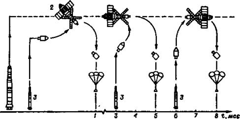
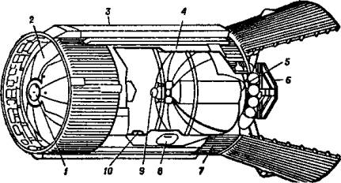

Приключения в «Небесной лаборатории»
Итак, через два года после создания в Советском Союзе первой космической лаборатории «Салют», о которой у нас еще речь впереди, американцы вывели на орбиту свою станцию. Она представляла собой соответствующим образом переделанную третью ступень огромной ракеты-носителя «Сатурн», с помощью которой астронавты США совершили высадку на поверхность Луны. Ну а после того, как лунная программа была завершена, той же ракете нашли еще одно применение.
ЧТО ПРИДУМАЛИ АМЕРИКАНЦЫ? Несмотря на то, что американская станция имела несколько меньшую длину, чем наша (14,6 м), благодаря большему диаметру (6,6 м против 4,15 м) астронавтов удалось разместить с большим комфортом: каждому полагалась своя персональная спальная кабинка. В такой кабинке имелись по 6 шкафчиков для личных вещей и спальный мешок. Правда, из-за тесноты этот мешок попросту висел на стенке, так что астронавту приходилось спать, как бы «стоя», но в условиях невесомости это не имело большого значения.
Помещение для личной гигиены имело площадь 2,8 кв. м, что вполне сравнимо по своим размерам с туалетами и ванными в наших квартирах. Оно было снабжено умывальником и приемниками отходов жизнедеятельности. Интересно, что умывальник представлял собой закрытую сферу, имеющую два отверстия для рук, снабженных резиновыми заслонками, так что вода не имела возможности попасть изнутри наружу и отсасывалась специальным насосом.
Все это было смонтировано у одной из стенок помещения. У другой стенки расположены индивидуальные шкафчики для туалетных принадлежностей. Мылись космонавты с помощью губок, а брились безопасными бритвами.
Кают-компания, где астронавты проводили свой досуг, готовили и ели, имела площадь 9,3 кв. Здесь имелись плита с конфорками для разогревания пищи, небольшой стол, шкафы и холодильники.
Стол с трех сторон был оборудован тремя индивидуальными кранами для питьевой воды. Кроме того, предусмотрены также краны холодной и горячей воды, используемой при приготовлении пищи.
Здесь имелись также четыре кресла — три у стола, одно у окна, через которое можно наблюдать, а при желании и фотографировать Землю, а также библиотечка и магнитофон с запасом кассет.
Отсек для тренировок и проведения экспериментов (площадь 16,7 кв. м) был оборудован рядом приборов и устройств, в частности, системами для создания отрицательного давления в нижней половине тела космонавта — их американцы позаимствовали у нас; впервые подобные костюмы были опробованы на «Салютах». Рядом стоял велоэргометр, на оси которого имелись небольшие электрогенераторы, так что, вращая педали, астронавт во время тренировки заодно и вырабатывал электричество. А на контрольной панели с записывающим устройством и индикаторами давления крови, частоты сокращений сердца, частоты дыхания, температуры тела и скорости обмена веществ показывались все параметры организма тренирующегося.
Лабораторный отсек по объему был примерно вдвое больше бытового и использовался, в основном, для экспериментов, связанных с перемещениями астронавтов. Его внутренний диаметр — 6,4 м, а высота от пола до переходного люка в шлюзовую камеру составляла 6 м.
Для удобства перемещения людей внутри станции были предусмотрены поручни и скобы, а кроме того, на рабочих местах астронавты могли пристегиваться страховочными поясами.
Чтобы экипаж в случае необходимости мог перейти из космического корабля в блок станции или, напротив, выйти в открытый космос, имелась шлюзовая камера. В ней размещалось также оборудование для хранения и подачи газов, составлявших искусственную атмосферу станции, и для контроля параметров ее атмосферы. Здесь же было установлены устройства, обеспечивающие терморегулирование в отсеках станции и энергоснабжение ее до развертывания панелей солнечных батарей и во время полета в тени Земли.
Причальная конструкция служила для стыковки станции с космическим транспортным кораблем «Аполлон». В ней было предусмотрено два стыковочных узла. Один — основной — располагался в торцевой части конструкции, второй — резервный — находился на боковой стенке.
На станции также имелся комплект астрономических приборов и другого оборудования для научно-исследовательских целей.
Американцы, кажется, предусмотрели все до мелочей. На Земле перед запуском в кладовые станции были загружены многотонные запасы не только кислорода, азота, воды и пищи, но и множество одежды, обуви, белья и хозяйственных мелочей. Среди них было по 60 рубашек, курток и штанов, 210 комплектов нижнего белья, по 15 пар обуви и перчаток, 30 комбинезонов, 95 кг полотенец и тряпок для вытирания, 25 кг бумажных салфеток, 55 кусков мыла, 1800 ассенизационных мешочков, набор ремонтных инструментов, 13 съемочных камер, 104 кассеты с пленкой, аптечка массой в 34 кг, свыше сотни ручек и карандашей и т. д.
Впрочем, несмотря на то что общая масса всего этого добра достигала 5 т, запасов все-таки не хватило, и их потом пришлось возобновлять при смене экипажей.
А НЕ РАСКРЫТЬ ЛИ НАМ ЗОНТИК? По программе, запуск станции намечался на 14 мая 1973 года. На ней должны были побывать три экспедиции, причем первая, в составе Чарлза Конрада, Пола Вейца и Джозефа Кервина, должна была стартовать уже через сутки после выхода станции на орбиту.
Однако уже перед стартом все пошло наперекосяк. Сначала забастовали электрики космодрома. Потом в ферму обслуживания ударила молния. Затем при заправке ракеты-носителя топливом из строя вышел насос подачи жидкого кислорода, его пришлось срочно менять…
Так что, когда ракета «Сатурн-5» все-таки стартовала, к великому восторгу полумиллиона болельщиков, собравшихся вокруг космодрома, с облегчением вздохнул и обслуживающий персонал. Но, как оказалось, все рано обрадовались.
Когда ракета-носитель сделала свое дело и «Скайлэб» оказался на орбите, выяснилось, что не сработали пиротехнические замки и панели солнечных батарей не раскрылись. По данным телеметрических измерений, они вырабатывали всего 25 ватт энергии вместо положенных 12 400 ватт. Это была серьезная неполадка, и инженеры на Земле переполошились.
Настроение в Центре управления окончательно испортилось, когда анализ ситуации показал: неисправность серьезная, и, даже если послать астронавтов, они вряд ли смогут устранить аварию — до батарей им попросту не добраться.
Беда редко приходит одна; заодно выяснилось, что при запуске был сорван и противометеоритный экран. Потеря, быть может, была бы и не очень страшной — как показывает практика, в околоземном пространстве не так уж много микрометеоритов, — если бы этот экран по совместительству не служил еще и своеобразным солнечным зонтиком, предохранявшим станцию от перегрева. В итоге за сутки температура внутри станции поднялась до 38 градусов жары и продолжала повышаться. Еще через день внутри станции царило уже сущее пекло — +55 °C!
Конечно, можно было бы плюнуть на все и подготовить к запуску запасную станцию. Однако каждый житель США был осведомлен, что станция стоит 294 млн. долларов да еще в 160 млн обошлись ракета-носитель и работы по обслуживанию запуска. А швырять столь большие деньги на ветер рачительные американцы не приучены.
Стали думать, как спасти станцию. Тут кому-то в голову пришла спасительная мысль: «А что, если астронавты возьмут с собой белое теплоотражающее покрывало и накроют им станцию?…»
Расчеты показали, что в таком случае температура внутри станции может снизиться до вполне приемлемой величины.
Старт первой экспедиции отложили до 25 мая. И пока специалисты думали, каких размеров должно быть покрывало, из чего его шить, астронавты стали тренироваться, стремясь еще на Земле понять, как им лучше всего выполнить неожиданное задание.
Через несколько дней «зонт», представлявший собой складывающееся полотнище размерами примерно 3,5 на 4 м из двух слоев нейлоновой и майларовой ткани, был готов. Сшили его две швеи, которых вместе с их машинками доставили специальным самолетом на космодром из Хьюстона. Работали они по 12–14 часов в день и сделали все на совесть. Одновременно разработали и конструкцию стрежней, облегчавших раскрытие многометрового «зонтика».
Все это тут же забрали астронавты. Они надели скафандры и полезли в бассейн с водой, на дне которого стоял макет станции и можно было провести последние тренировки в условиях, приближенных к натурным.
А пока они тренировались, швеи сшили еще два запасных полотнища — как говорится, на всякий случай.
С борта станции между тем продолжали поступать тревожные вести. Жара делала свое дело: разогревшаяся изоляция начала выделять в атмосферу станции вредные газы. Кроме того, в плохо работавших из-за жары и недостатка электроэнергии холодильниках начали портиться продукты…
Астронавты поспешили на космодром, где уже заждалась их ракета. Но старт снова пришлось отложить — в фермы обслуживания опять-таки, уже во второй раз (!), ударила молния, и все системы пришлось перепроверять еще и еще — не нарушил ли их исправность громадный электрический разряд?…

Последовательность запусков по программе «Скайлэб»: 1 — выведение на орбиту главного модуля без экипажа; 2 — дистанционное включение систем и подготовка станции к приему экипажа; 3 — основной блок космического корабля «Аполлон» с экипажем.
СВИСТАТЬ ВСЕХ НАВЕРХ! Старт, впрочем, прошел без особых осложнений, и вскоре «Аполлон» с экипажем на борту причалил к станции.
Внешний осмотр подтвердил первоначальные предположения: одна из солнечных панелей оказалась сорвана, а другая не раскрылась потому, что в механизм попал кусок противометеоритного экрана.
Экипаж надел скафандры, командир открыл люк в командном отсеке корабля, и Пол Вейц, высунувшись наружу, специальным крюком на длинной ручке попытался вытащить обломок экрана из механизма раскрытия панели. Но все его усилия оказались тщетны — проклятый обломок засел прочно.
На Земле решили, что попытку можно будет повторить как-нибудь потом, а пока экипажу следует отдохнуть как следует, ведь астронавты не спали уже более 20 часов.
Экипаж закрыл люк, наполнил кабину кислородно-азотной смесью и снял скафандры. Оставалось окончательно состыковаться со станцией, и можно спать спокойно.
Не тут-то было! Ни первая, ни вторая попытка успеха не имели — стыковочные замки упорно не хотели работать. Почему? Чтобы выяснить это, надо было снова надевать скафандры, вылезать наружу и ремонтировать замки. Измученные люди снова облачились в защитные доспехи, но тут экспертам на Земле пришла спасительная мысль: надо сначала проверить, подается ли электропитание на привод замков.
Поломка была найдена и устранена. Замки закрылись. Экипаж снял скафандры и наконец-то получил возможность отдохнуть после 27 часов бодрствования и напряженной работы.
ЖИВЕМ, КАК В ПУСТЫНЕ? Пока экипаж спал, специалисты на Земле еще и еще раз анализировали ситуацию, искали наилучшие пути спасения станции. Итоги размышлений оказались не очень утешительны. Большинство экспертов сошлись на мнении, что имеющимся инструментом астронавтам вряд ли удастся выбить обломок и раскрыть солнечную панель — придется эту операцию оставить второй смене астронавтов, если таковая будет.
Разрешить сомнения — готовить или не готовить к полетам две последующие смены — можно было после того, как астронавты осмотрят станцию изнутри, а потом выйдут наружу и попытаются накинуть на нее спасительное покрывало-зонтик.
И вот 26 мая выспавшийся экипаж вновь принялся за работу. Прежде всего астронавты отправились обследовать станцию. Это было довольно опасное занятие, поскольку, как уже говорилось, из-за высокой температуры внутри могли накопиться токсичные газы. Посовещавшись, астронавты все же решили скафандры не надевать — в них внутри станции не развернешься, — а ограничиться лишь респираторами и защитными перчатками.
Впереди всех на разведку отправился Вейц, «вооруженный» газоанализатором. Никаких ядов в атмосфере станции он не обнаружил, нашел лишь плававшую в невесомости тряпку и какие-то гайки — свидетельство поспешной работы земных монтажников. Температура внутри станции достигала 45 °C. «Тут, как в пустыне — жить жарко, но можно», — прокомментировал он результаты осмотра.
На Земле облегченно вздохнули — появилась надежда, что станцию можно спасти.
СВОЯ РУКА — ВЛАДЫКА? Вернувшись после экскурсии на свой корабль, экипаж позавтракал. Затем астронавты распаковали теплозащитный экран и принялись за его установку. Команда разделилась. Конрад и Вейц снова нырнули в пекло станции, а Кервин остался на корабле, чтобы через иллюминатор следить за ходом операции и подавать советы.

Основной модуль орбитальной станции «Скайлэб». Цифрами обозначены: 1 — люк для сообщения со шлюзовой камерой; 2 — наружная изоляция; 3 — панели солнечных элементов; 4 — метеорная защита; 5 — реактивная система управления ориентацией станции; 6 — радиатор; 7 — теплозащита; 8 — входной люк для обслуживания станции на Земле; 9 — люк для удаления отходов; 10 — шлюз для выноса приборов в открытый космос.
Для установки и раскрытия «зонтика» астронавты использовали специальный шлюз, предназначенный для выдвижения в открытый космос научных приборов, и механическую руку-манипулятор.
Повозиться с развертыванием полотнища пришлось изрядно. Около 4 часов астронавты, обливаясь потом, методично расправляли полотнище, время от времени укрываясь от жары в более прохладной шлюзовой камере. Тем не менее расправить полностью зонтик не удалось — остались три большие складки.
Однако главное было сделано: прикрытая от палящих лучей станция перестала напоминать сауну. Температура внутри кабины начала снижаться со скоростью один градус в час, и вскоре градусник остановился на отметке 37 °C. Впоследствии, когда станцию удалось развернуть так, чтобы солнце атаковало ее уже не «в лоб», температура снизилась еще на 7 градусов.
В КОСМОСЕ НЕ СОСКУЧИШЬСЯ? Перебравшись на станцию, экипаж попытался провести хотя бы некоторые из запланированных научных экспериментов. Что-то удавалось сделать, что-то нет.
Температура на борту станции тем временем снизилась до 25 °C, и жизнь астронавтов стала почти нормальной. Они даже занялись акробатикой — стали бегать по цилиндрической поверхности станции, совершая полные обороты. Сначала бегущий то и дело срывался со стенки, «всплывая» к центру станции, но в конце концов все приноровились и даже показали этот «аттракцион» по телевидению, к удовольствию журналистов и телезрителей.
Наземные же службы попытались извлечь из этого незапланированного эксперимента практическую пользу. Они замерили величину вибраций и сотрясений станции от интенсивных движений внутри нее и пришли к выводу, что они незначительны и вполне допустимы.
Затем впервые в истории космонавтики Конрад постриг Вейца, старательно собрав все волосы пылесосом. А затем все астронавты по очереди помылись в космическом душе.
Как мы уже говорили, вода в невесомости собирается крупными пузырями. Поэтому, чтобы она не разлеталась по всей станции, душевая кабинка окружена пластиковой пленкой так, что получилось нечто вроде бочки. Астронавт залезал внутрь через верхний люк, закрывал его за собой и лишь затем включал воду, которая отсасывалась затем специальным насосом. Ну а последние капли приходилось собирать все тем же пылесосом, который забастовал от непривычной работы.
Астронавты указали на то земным конструкторам, и те пообещали к следующему рейсу на станцию подготовить новую модификацию «пылеводоволосососа».
А ЕСЛИ МЕНЯ, КАК МУХУ?… Одновременно все вместе — и наземные эксперты и астронавты — искали способы отремонтировать хотя бы одну солнечную батарею, чтобы не пришлось столь жестко экономить электроэнергию. Наконец было решено, что 7 июля астронавты выйдут в открытый космос, вооружившись шестом и… хирургическими ножницами. Поначалу предполагалось взять с собой еще и пилу, но потом от нее отказались — не дай бог, астронавт прорежет ею перчатку или скафандр.
За день до выхода с Земли передали на борт станции окончательные рекомендации по ремонту. Один из астронавтов по предварительно установленному самодельному поручню должен добраться до солнечной панели, привязать к ней трос, «отплыть» на безопасное расстояние и дернуть за конец каната.
Конрад выслушал инструкцию и мрачно сострил: «Я дерну, а панель прихлопнет меня, как муху…» Но его успокоили, сообщив, что пружина там не очень сильная и соответствующие эксперименты на Земле уже проведены.
И вот 7 июня 1973 года Конрад и Кервин надели скафандры и вылезли наружу. Быстро собрали из трубок 8-метровый шест. К его концу привязали ножницы, и, подобравшись к месту аварии поближе, Кервин попытался искромсать ими кусок металла, заклинивший механизм раскрытия. Конрад помогал ему, придерживая товарища, чтобы тот не «уплывал».
Насколько трудной оказалась такая несложная с виду работа в космосе, можно судить хотя бы такому факту: сердечный пульс у тренированных людей вскоре подскочил до 150 ударов в минуту. Астронавтам здорово мешали работать раздувшиеся в вакууме, словно футбольные мячи, скафандры. А сбросить их нельзя — люди ведь должны чем-то дышать…
В конце концов такое бесполезное занятие им надоело, и Конрад полез, перебирая шест руками, к месту аварии. Добравшись, он увидел, что панель заклинена небольшой полоской алюминия с болтом. Астронавт поставил ножницы, как надо, нажал на одно из колец.
Пыхтящий Кервин потянул за веревку, привязанную к другому кольцу, и в конце концов полоску удалось разрезать.
Ура! Победа?! Но оказалось, что радость преждевременна — панель немного сдвинулась с места, но полностью не раскрылась. Астронавты привязали к ней конец троса и впряглись в лямку, словно бурлаки на Волге. Панель подалась еще, но полностью так и не раскрылась…
Обескураженные ремонтники вернулись на станцию и подробно доложили обо всем на Землю. Несколько минут длилось тягостное молчание — эксперты на Земле соображали, в чем загвоздка. Наконец оператор из Центра управления сообщил, что, возможно, причина неудачи в том, что замерз гидропривод раскрытия панели, оказавшийся в тени. Надо развернуть станцию так, чтобы на него посветило солнце, и тогда, вероятно, панель раскроется.
Так и поступили. И — о, чудо! — через несколько часов панель заработала.
НАСТОЙЧИВЫМ ВЕЗЕТ?! Получив дополнительный запас электроэнергии, астронавты смогли уже по-настоящему заняться научной работой. Когда экипаж закончил свою миссию и 22 июня приземлился, специалисты подсчитали, что астронавты выполнили научную программу на 80–90 процентов, несмотря на то, что уйму времени и сил у них отняли ремонтные работы.
Последующим двум экипажам тоже досталось — люди страдали и от жары, и от космического укачивания, и от болезней… Программа экспериментов была весьма насыщенной — иной раз приходилось работать и по 12 часов в сутки. Но астронавты не унывали, находили время не только для серьезных дел, но и для шуток.
Так однажды в Центре управления полетами вдруг услышали доносившийся со станции приятный женский голос. Откуда там женщина?! И все хохотали до слез, когда разобрались, что один из астронавтов контрабандой провез на станцию магнитофонную запись голоса жены…
В общем, все оказались молодцами и заслуживают того, чтобы, кроме уже названных астронавтов, мы упомянули еще имена командира второго экипажа Алана Бина — летчика, который ранее совершил полет на «Аполлоне-12» на Луну, а также его коллег — Оуэна Гэрриота, доктора наук, специалиста по физике ионосферы, и авиаинженера Джека Лусмы.
В третьем экипаже командиром был Дж. Карр, а его коллегами У. Поуг и Э. Гибсон. Все новички, первый раз полетевшие в космос, они тем не менее поставили национальный рекорд по длительности пребывания в космосе — 84 суток.
Неплохо проявила себя и сама станция «Скайлэб». Отлетав свое, она в 1978 году упала в Индийский океан, не причинив вреда никому из живущих на Земле.
«ФРИДОМ» И ДРУГИЕ ПРОЕКТЫ. И под конец главы — несколько слов о других проектах американцев, касающихся создания долговременной орбитальной станции.
В 1970 году обсуждался проект огромной «космической базы» на 50 человек, состоящей из девяти модулей. В перспективе эту базу планировалось расширить до «космического отеля», который мог бы вмещать 400 космических туристов.
Однако денег на это не нашлось. И тогда американцы занялись более реальным проектом «Фридом» («Свобода») с международным участием космических агентств Японии, Канады и стран Западной Европы. Считалось, что эта станция сможет не только заменить «Скайлэб», но и станет основой новой космической программы США, нацеленной на реализацию Стратегической оборонной инициативы.
Поначалу стоимость проекта оценивалась в 21 млрд. долларов. Однако Конгресс США таких денег не дал, и аппетиты пришлось урезать до 17,7 млрд. долларов.
Первый вариант станции представлял собой 122-метровую ферму, расположенную перпендикулярно к поверхности Земли. Лабораторный и жилой блоки предполагалось разместить у нижнего конца, чтобы использовать возможность гравитационной стабилизации.
Потом проект еще несколько раз пересматривался, делаясь все более компактным.
Станцию «Фридом» планировалось собрать за 10 или 11 запусков кораблей «Спейс Шаттл». Первый старт был назначен на март 1994 года, чтобы завершить сборку уже в марте 1997 года.
Однако этот проект не был реализован. Он рухнул, если так можно выразиться, под собственной тяжестью в 1990 году. В очередной раз выяснилось, что станцию необходимо перепроектировать, поскольку старый проект не удовлетворяет весовым требованиям. Кроме того, как показали первые эксперименты, сборка «Фридома» потребует гораздо большего числа выходов астронавтов в открытый космос, чем предполагалось вначале. Таким образом, необходимо было дополнительное финансирование, но вместо новых денежных вливаний расходы на программу были сокращены.
НАСА попыталось спасти программу, предложив в марте 1991 года усеченный проект станции, что отразилось даже на ее названии — «Фред» вместо «Фридом».
Последовательность монтажа космической станции была резко упрощена, за счет чего удалось сократить число выходов астронавтов-монтажников в открытый космос. Один набор солнечных батарей был из проекта удален, сократив мощность электростанции с 75 до 56 кВт.
Станция «Фред» была значительно меньше предшественницы. Длина горизонтальной фермы осталась прежней, однако из проекта навсегда исчезли 105-метровые перпендикулярные фермы. До 8,2 м уменьшилась длина основных блоков, за счет этого снизился обитаемый объем, а число астронавтов сократилось вдвое — до 4 человек.
Первый запуск был намечен на ноябрь 1995 года, а монтаж должен был завершиться в сентябре 1999 года, после 17 полетов кораблей «Спейс Шаттл».
Однако даже с учетом этих изменений общие расходы на строительство удалось снизить только до 16,9 млрд. долларов, что, по мнению американских конгрессменов, все равно было слишком дорого.
Проект международной орбитальной станции, скорее всего, так и не был бы реализован в обозримом будущем, если бы к проекту не подключилась и Россия. Огромный опыт по созданию и эксплуатации долговременных орбитальных станций, накопленный еще в советские времена, позволил не только снизить текущие расходы, но и заметно ускорить саму программу. Ныне, как известно, на орбите существует МКС — Международная космическая станция, или «International Space Station».